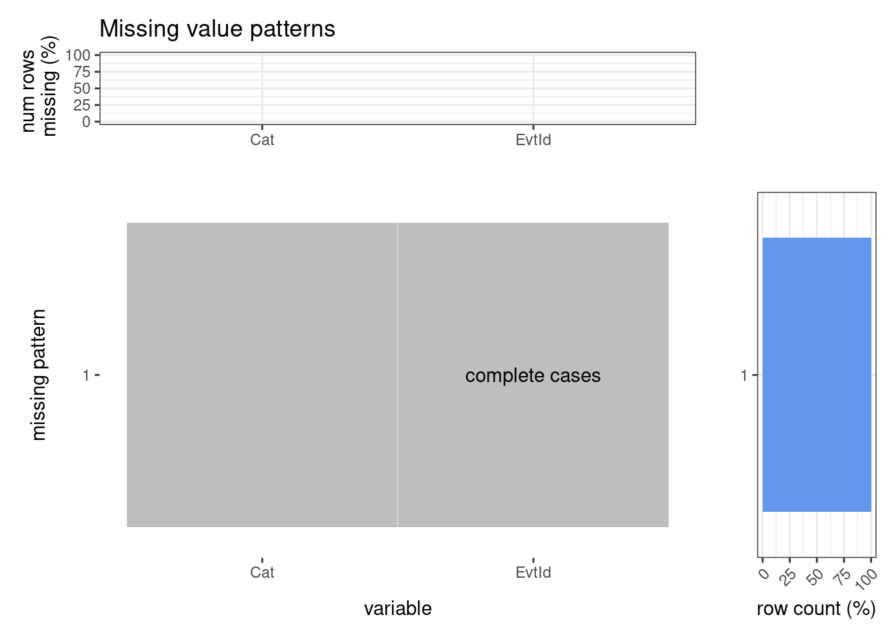

Chapter 4 Missing values
4.1 Missing Values By Individual Tables
We first analyze the missing values pattern for all of our tables individually.
4.1.1 Missing Values for Main Events Listing Table
As shown in the graph below, the majority of the data points have missing fields. The most missed fields are
location_description (LcDs) and cost_description (CsDs). Roughly 80% of the data points aremissing location
description, and more than 75% are missing cost description. Almost 40% of the data are actually missing both. We
also have a lot of Email (Em) and Phone (Ph) missings (around 25% and 20% respectively). Those fields are not
useful for our further analysis. For the description fields, they are textual and semantic, which would be
interesting subjects for analysis and learning. However, the complexity of such analysis is beyond this study. As
for contact information like email and phone number, they are not very relevant to our analysis. The top three
missing patterns are missing both LcDs and CsDs, missing LcDs only, and missing CsDs only. And the top 9
missing patterns are all involving some combination of LcDs, CsDs, Em and Ph.


## LcDs CsDs Em Ph Snp Ds Url EvtId Title Dt ST ET CsFr
## 60360 59790 22941 16896 310 4 2 0 0 0 0 0 0
## MtSe Ntc
## 0 0In the chart below, we dropped the fields that we do not need as mentioned above. As shown in the graph, almost
all the data points are complete cases now. The few missing data in snippet (Snp), description (Ds) and url
(Url) fields, which are also not really needed in our study.


## Snp Ds Url EvtId Title Dt ST ET CsFr MtSe Ntc
## 310 4 2 0 0 0 0 0 0 0 04.1.2 Missing Values for Auxiliary Tables
We also inspect the other auxiliary data tables that we are planning to use for our analysis.


## Org EvtId
## 1 0As can be clearly seen from the missing data plots, the event category table itself does not have any missing data, and the event organizer table has very few missing organizer rows, more precisely, it only has 1 row of organizer missing.
The event id (EvtId) appears to be a unique identifier for events, and is always present in all rows of all
tables we analyze.
As for the location data for the park events, as we can see from the chart below, there are decent amount of
missing fields in the data set. Almost 50% of the data are missing Address (Addr), and unfortunately we have almost 40% of the data missing field is zip (Zip), which we were hoping to use to help us allocate the
parks into smaller regions for further location-based studies. Then the only location information for us to
perform fine-grained regionalization of the parks is thelongitude (Long) and latitude (Lat) field pair, for
which we fortunately have 0 missing data. But the complexity would be much higher. It is interesting that the data
set has complete longitude and latitude records for the events while a lot of the data are missing the zip code
data. With zip code being the apparent easier location data to acquire, we suspect that the longitude and
latitude data are required for event registration so that it could be located on a map instantly.
Analyzing the missing patterns by rows, the top pattern is actually “complete cases”, although for only about 15%
of the dataset. The data records missing only zip code (Zip) or address (Addr) comes second and third, then
followed by the pattern of data missing all of address, zip code, and accessibility information.


## Addr Accs Zip PkId Bo LcNm EvtId Lat Long
## 46061 42620 37826 12263 1479 2 0 0 0After dropping “Addr”, “Accs”, “PkId”, “Zip” columns in the data set, we can have a closer look at the missing data percentage for Borough (Bo) and Location Name (LcNm). Location name is not a reliable source of information for location identification, since locations are sketchy and not rigidly defined. The missing data in the Borough (Bo) fields are minimal, which would not affect our coarse-grained location-based studies.


## Bo LcNm EvtId Lat Long
## 1479 2 0 0 0How about the missing patterns when joining the individual additional information tables (categories, locations, and organizers) with the main events listing table? We will explore in the following section.
4.2 Missing Values for Joined Data Table
Next, we analyze the missing value patterns when we join our main events listing table with the auxiliary tables.
4.2.1 Using Full Outer Joins
As previously discussed, the location description (LcDs), cost description (CsDs), email (Em), phone (Ph),
snippet (Snp), description (Ds), url (url) are not interesting variables for the purpose of our project, as
most of them are free-form text data, thus we are dropping them in this section for analyzing the missing patterns
for the events listing data joined with other additional information tables since we do not really care if they are missing or not.
Also, as disccused previously, title
(Title), is cost free (CsFr), date (Dt), end time (ET), is must see (MtSe), notice (Ntc), start time
(ST) all have no missing data in the main events listing data table, we will only keep title (Title) to
represent these variables in this section.
As analyzed above, Lat / Long are always present in the locations table, thus we will use Lat to count the
number of unique locations per EvtId, thus we used it to determine if location information is missing or not in
the joined table.

## Title Org Cat Loc EvtId
## 19406 8784 2571 2010 0When only looking at these variables, almost 75% of the rows have complete information.
There are roughly 15% cases from the joined dataset that have all of the event_id, organizer, category, and location information, but missing the title (and thus the other variables information) only, meaning that there are close to 15% of the events with an event_id that appear in all of the auxiliary tables but not the main event listing table. Therefore, if we performed left outer joins on the tables (where we keep the main event listing table on the left), we should be getting close to 90% of complete cases.
Also, roughly more than 20% of the cases are missing title, these are the events with event_id appear in at least one of the auxiliary tables but not in the main table.
It is also interesting to see that there are no cases of all organizer, category, location information missing but with title information present. So any listed events in the main dataset have at least one of the three information (organizer, category, location).
A potential explanation for the above facts might be that a placeholder event can be registered in the system with a minimum one of these three pieces of information and an event_id was generated, but the event may or may not ultimately get listed and stored in the main event listing table.
4.2.2 Using Left Outer Joins
The following plot demonstrates the missing pattern analysis when we instead perform left joins of the main table with the auxiliary tables. It confirms that we have close to 90% (from the plots, more than 87.5%) of complete cases among these variables, and the top missing variable is organizer (less than 12.5%), followed by category, followed by location information.

As a result of the analysis in this section, we will use the table produced by the left outer join (including the
variables that were left out in this section due to the Title representation) for our main
analysis in later chapters, since it includes the most complete and interesting information.
4.3 Top Categories with Missing Organizer
It is still pretty surprising to us that after the left outer join, we still have more than 10% of the cases missing an organizer, as we thought all events should have an organizer. Therefore, we wanted to see what are the top categories of events without the organizer information.
Note here that an event might be associated with multiple categories, so the total number of missing organizers across the different categories would be higher than the number of events with missing organizers in the previous section.

So it seems that sports-related events (with Fitness/Running/Sports/Outdoor Fitness categories) are the most common themes for events missing organizer information in our dataset. A closer look at the specific event titles suggests that a lot of them were running events organized by “NYRR” in different parks:

4.4 Missing Values for Crimes in Parks

## Park Qtr Boro Size Cat Mdr Rape Rob Ass Burg G_L
## 0 0 0 0 0 0 0 0 0 0 0
## GL_M_V Tot
## 0 0The NYC park crime data originally comes in different files by quarter. We consolidated all of them to analyze the missing data pattern. In order to ensure that no parks are missed in any of the data files, we created a data set with all the <park, quarter> pairs there could possibly be in the crime data set. Then we merge the new data set with the crime data set to perform the missing data analysis. As shown in the graph above, there is actually no missing data in the crime data set.